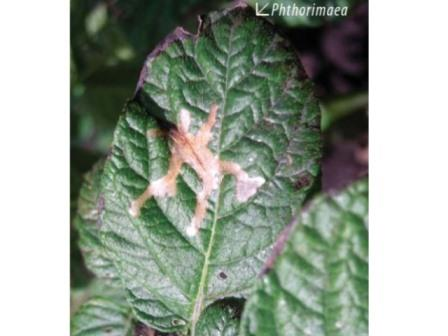

<ion-header>
  <ion-toolbar>
    <ion-title size="small" >
      Tallos/Huecos o galerias
    </ion-title>
  </ion-toolbar>
</ion-header>

<ion-content>
  <ion-row >
    <ion-col>
      <ion-item  >
        <ion-label>{{nombre.preg30}}</ion-label>
      </ion-item>
    </ion-col>
    <ion-item >
      <ion-icon name="add-circle-outline"></ion-icon>
      <ion-icon (click)="polillaImage()" color="success" name="images-outline"></ion-icon>
    </ion-item>

    <ion-row (click)="polillaModal()"> 
      
    </ion-row>
  </ion-row>

</ion-content>